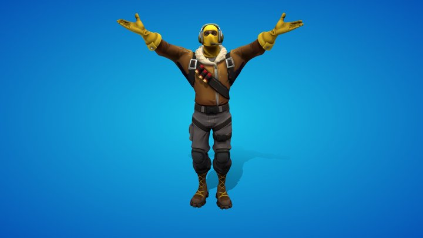

Items page
all thourgh fortnite there have been lots of skins and items and emotes. there is lots of fortnite skins like lots, there
are also collab skins, like other companys or tv shows movies or celebrites have their own skin in fortnite. sometimes fortnite might be in a good mood so they like to give out free skins or cosmectics. But celebrites or artist get and emote its a great way to express when you win a game
also to mention cartoon charecters, peter griffin, batman, spiderman, catwoman it goes on and on. lots of companies want to be apart fortnite. Now moving onto the items, that meaning the weapons in the game.
Over the years there have been lots of new guns and there have been times when old guns came back. Fortnite would mess up on some of these guns. Some would be really powerful and some were not worthcarrying becasue they were so bad.
Fortnite sometimes collabs with other creators that play there game and sometimes they also get an skin, like ninja he got his very own skin.
But over the years many other creators also got there skins, Fortnite had tournments that of you get with in a range of placement you could get the skin for free. It was a really good idea.
I belive that emotes have to be the best thing because they are cheap, yes skins could cost up to 800-2000 vbucks. 1000 vbucks cost around $14.99
most emotes only cost 500 vbucks so it a good price and the emotes are really good and they are either epic games made, or the collabs.
Well thats all from me talking about items,skins, and emotes. I hope yoo also give fortnite a chance. i am adding some links if you want to check out any skins emotes or items.
fortnite-skins
fortnite-emotes
fortnite-guns
